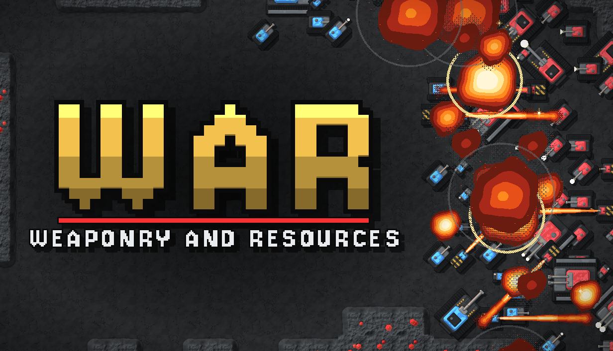
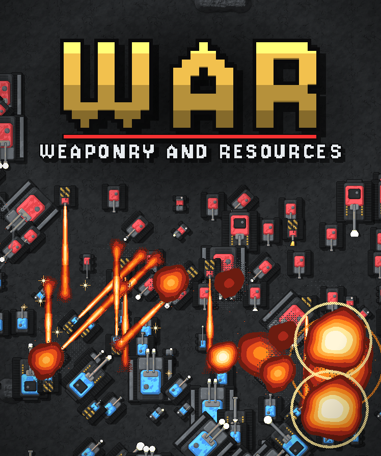
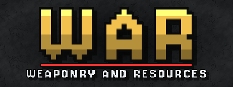
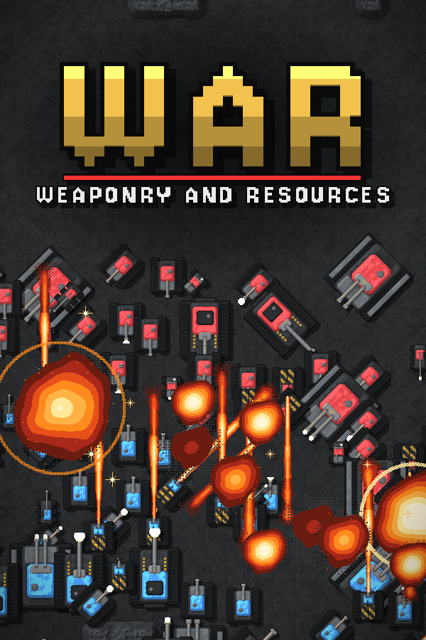
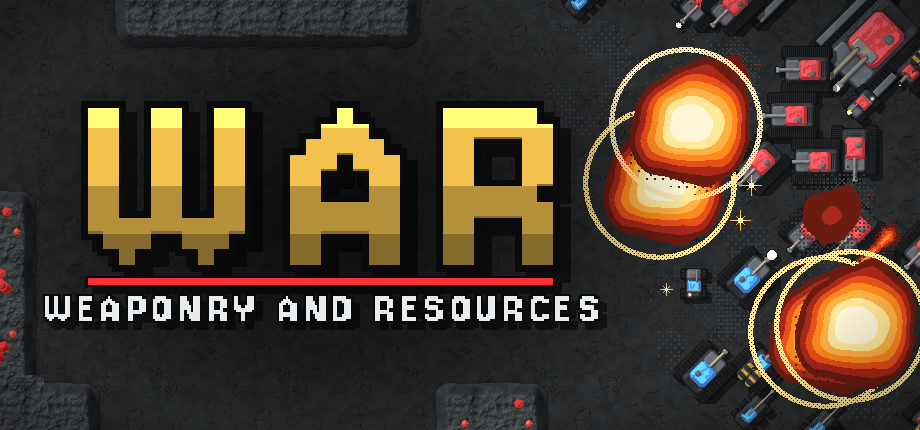
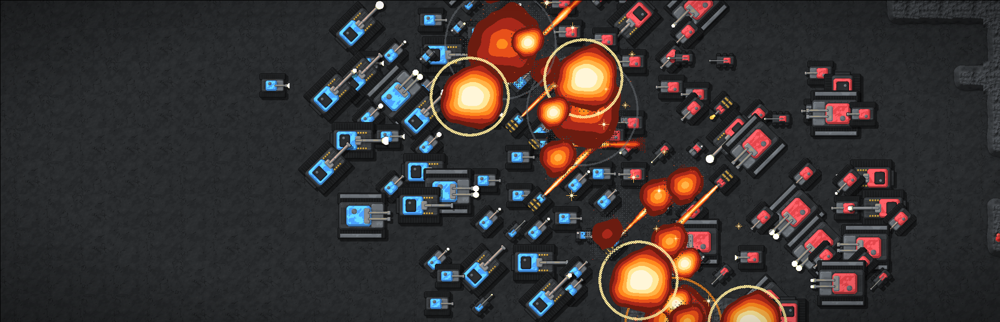
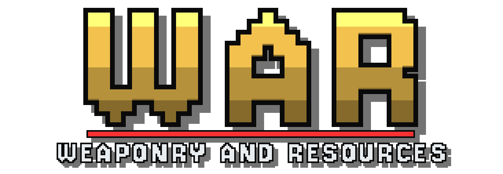

Mockup for review, built from docs/store/store-text.md. Not the real Steam page.
All Games > Strategy Games > War: Weaponry and Resources
War: Weaponry and Resources

A top-down RTS for you and your friends, with armies in the thousands. Dig through rock, wall off chokepoints and hide bombs, then throw everything at your rivals' HQ. Every match is a new cave map. Online multiplayer only for now; AI opponents are planned.
Resource ManagementPvPBase BuildingWarTop-DownWargameRTS+
Play War: Weaponry and Resources
Free To PlayPlay GameWhat the developers have to say
Why Early Access?
WAR is still in active development. You can mine, build and fight online now, but the unit roster, the map generator and the balance will change a lot before the full release, and we want players to shape those changes. Real matches show us which units are unfair, which maps play well and which features matter most, which internal testing can't.
Approximately how long will this game be in Early Access?
Roughly 18 to 24 months. The game leaves Early Access once the features listed below are in and the balance has settled; if plans change, we'll say so on the store page and in the community hub.
How is the full version planned to differ from the Early Access version?
The full version is planned to add:
We also plan to look at ranked matchmaking. The list will grow and change with what players ask for.
- AI opponents with difficulty settings, for single-player skirmishes and co-op against the AI
- Static defences: a gun turret to hold a position and a jammer that blinds enemy scouting and radar around your base
- A tutorial that teaches the basics: mining, building, ordering units and digging
- More unit types and more kinds of terrain
- More variety from the map generator: new map sizes and layouts
- Balance and quality-of-life changes driven by player feedback and match replays
We also plan to look at ranked matchmaking. The list will grow and change with what players ask for.
What is the current state of the Early Access version?
An early but playable build. You can host or join online free-for-all and team matches with friends through Steam, on generated cave maps with secret start points. Diplomacy, walls, bombs, radar, digging and match replays are in. There are no AI opponents or tutorial yet, so you need at least one other player, and you should expect rough balance, bugs and frequent changes between updates.
Will the game be priced differently during and after Early Access?
No. The game is free to play during Early Access and will stay free to play at full release.
How are you planning on involving the Community in your development process?
Through the Steam discussions and regular playtests. Balance changes come from what players report and from match replays, and every update's notes say what changed and why.
About this game
Your HQ is all you have
Every player starts with one Headquarters. Lose it and you're out. Fight over a cave map nobody has seen before, alone or in teams, until one side's HQ is the last one standing.Play with friends
Right now WAR is played against other people: you need at least one friend online. AI opponents are planned. Host a lobby and invite friends straight from Steam; nobody has to open a port. Colourblind and high-contrast palettes and fully rebindable keys come as standard.Send everything
There's no unit cap. Box-select the whole army and send it, split it into squads and hit every lane at once, or leave a wall of tanks on a chokepoint while the rest go the long way round. Battles run to thousands of units, and the game keeps up.The map is a weapon
Caves are generated fresh every match: open clearings, rich expansions and narrow chokepoints between them. Wall a lane shut. Send Diggers through the rock to come up behind someone's defences. Hide bombs where their army will walk, and watch your Radar for the moment it arrives.Nobody knows where you started
Every player is dealt secret start sites and picks one before the countdown ends. Only your teammates know which. Scouting isn't optional.Build for the fight you're in
Each factory builds one kind of unit at a time, so every switch is a decision. Fast scouts to find them, heavy armour to break the line, artillery and snipers to pick it apart from range, flamethrowers for whatever gets through.Every unit costs you twice
Mining gems pays for your army, and upkeep keeps it alive. Build past what your economy can carry and your units start to decay, so a bigger army isn't always a stronger one.Alliances that can break
Turn diplomacy on and choose who you fight and who you share vision with, then send resources to the friend who's losing. Fog of war hides everything your side can't see, including what your allies are planning.Watch it back
Every match is recorded. Replay it with the fog lifted, at up to 8× speed, and find out exactly where that army came from.Early Access
The game is in active development and changes with every update. We plan to add AI opponents, static defences and a tutorial next, and what comes after that is shaped by what players tell us.System requirements
Windows
MINIMUM:
- OS: Windows 10 64-bit
- Processor: Quad-core, 3.0 GHz
- Memory: 8 GB RAM
- Graphics: DirectX 11 card with 2 GB VRAM (GeForce GTX 960 / Radeon R9 380 class)
- DirectX: Version 11
- Network: Broadband internet connection
- Storage: 1 GB available space
- Additional notes: Mouse and keyboard required. Hosting a large match uses more CPU than joining one.
RECOMMENDED:
- OS: Windows 11 64-bit
- Processor: 6 cores, Ryzen 5 5600 / Core i5-12400 class
- Memory: 16 GB RAM
- Graphics: Radeon RX 6600 / GeForce RTX 3060 class
- DirectX: Version 11
- Network: Broadband internet connection
- Storage: 1 GB available space
SteamOS + Linux
MINIMUM:
- OS: Ubuntu 22.04 64-bit, SteamOS 3 or equivalent
- Processor: Quad-core, 3.0 GHz
- Memory: 8 GB RAM
- Graphics: Vulkan-capable card with 2 GB VRAM
- Network: Broadband internet connection
- Storage: 1 GB available space
- Additional notes: Mouse and keyboard required.
RECOMMENDED:
- OS: A current 64-bit distribution
- Processor: 6 cores, Ryzen 5 5600 / Core i5-12400 class
- Memory: 16 GB RAM
- Graphics: Radeon RX 6600 / GeForce RTX 3060 class, Vulkan
- Network: Broadband internet connection
- Storage: 1 GB available space
Players and features
Multi-player; PvP: OnlineLanguages
English: InterfaceController
Mouse and keyboard only. No controller support.Accessibility
- Colourblind mode: Okabe–Ito palette for every player colour, unit, building, the minimap and the UI
- High-contrast mode: Every player colour at least 4.5:1 against the map floor
- Rebindable controls: Every order key, the queue and squad modifiers, and the menu key
- Adjustable audio: Master, music and sound-effect volume
- Camera options: Edge scrolling can be turned off; arrow keys and middle-drag pan
- No speech: No dialogue, so no subtitles are needed
All tags
Resource ManagementPvPBase BuildingWarTop-DownWargameRTSMilitaryCompetitiveMultiplayerStrategy2DPixel GraphicsDestructionDiplomacyTanksProcedural GenerationTeam-BasedEarly AccessIndieLegal
© 2026 CoolCoder64. All rights reserved.Every capsule (where Steam shows them)

Main capsule: front-page carousel
Vertical capsule: seasonal sales
Small capsule: search and lists (shown at 231 × 87)
Library capsule: library grid
Library header

Library hero with the library logo over it, as the Steam client places it (bottom left)